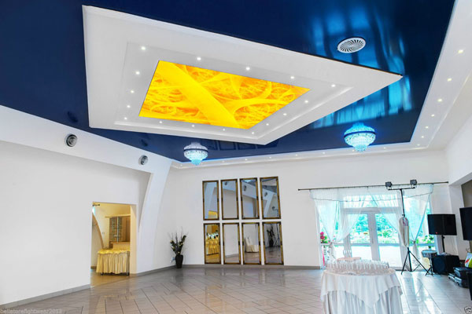
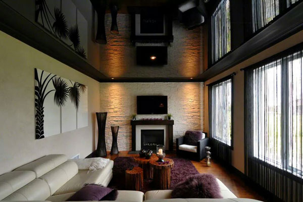
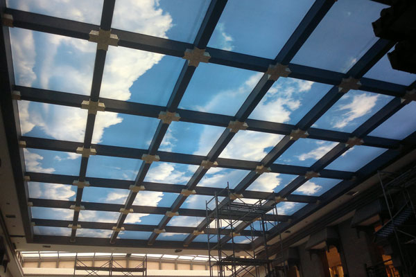
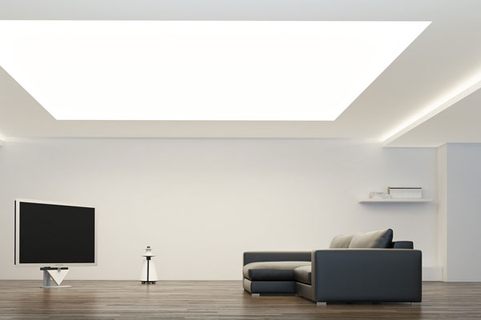
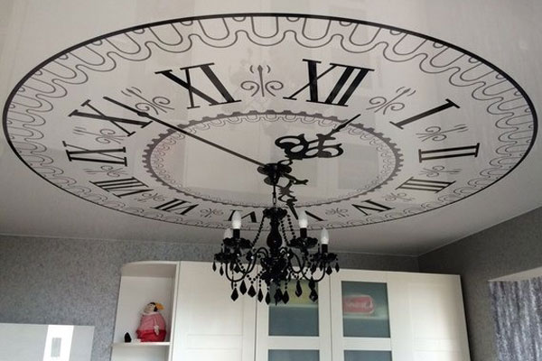
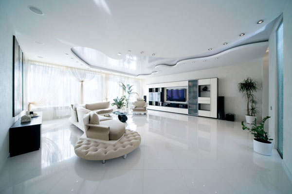

Advantages of stretch ceilings:
-

Perfectly smooth surface
The technology of installing a stretch ceiling is similar to making a drum - a cloth (PVC canvas) is stretched on the rim (profile around the perimeter of the room). Thus, the ceiling acquires a perfectly flat surface which can not be achieved by any other ceiling design option.
-

Or complex geometry
Elasticity of the film allows you to create complex geometric designs in space, not limited to planes and sharp angles. Waves, arches, spheres - the possibilities of stretch ceilings provide a wide scope for creativity and allow implementing interesting design solutions.
-

Even color
The color of the stretched ceiling is determined by the color of the film and, thus, is not subject to drawbacks of surface painting: it cannot have stroke marks from a roller or badly painted places. The palette offer more than 200 colors and shades and is constantly expanding.
-

Variety of textures
One of the most significant advantages is the variety of textures - stretch ceilings offer not only a classic matte surface, but also the pearl shine of satin, the mirror luster of lacquer, the softnes of velvet and even the coolness of the stone. Some of the solutions can only be offered by stretch ceilings.
-

Art printing
Stretch ceilings offer a unique opportunity to apply any image to the surface of the ceiling. The image can take the whole canvas or part of it. You can print, for example, a company logo, the emblem of your favourite sports team, a photo or even clouds on the blue sky above your head.
-

Lighting solutions
The use of transparent and semi-transparent cloths, as well as new profiles with led-backlighting, opens new possibilities in lighting: 3D and "floating" ceilings, stained-glass windows, light panels and other interesting solutions. They can be used both separately and in combination with classic chandeliers and various built-in lights.
-

Installation is fast
Unlike installation of plasterboard ceiling that takes 3 to 7 days, the installation of stretch ceiling takes several hours. In addition, the premises does not require preparation: you do not need to take out furniture from the room and cover the wallpaper and floor - just remove the flowers and make sure there is access to the walls.
-

Installation is clean
Installation of stretch ceilings is carried out using dust removal equipment, which reduces dusting by 97% and excludes the formation of dirt and waste typical for construction work. Therefore, you can install stretch ceilings at any stage of repair or in a completely renovated room.
-

Watertightness
Have you been flooded by neighbors or your roof leaked during the rain? There is no reason to be upset: the ceiling will not only not be damaged, it will also save your property from flooding, because it can withstand up to 100 liters of water per 1 sq.m. The master will drain the water, dismantle the ceiling, dry it and put it back in place.
-

10 years guarantee
The properties of stretch ceilings allows us to guarantee their durability: the physicochemical properties of the PVC film make it invulnerable to the harmful effects of moisture and temperature changes. Their elasticity allows you to ignore natural movements of the building, which lead to cracks in more rigid materials.